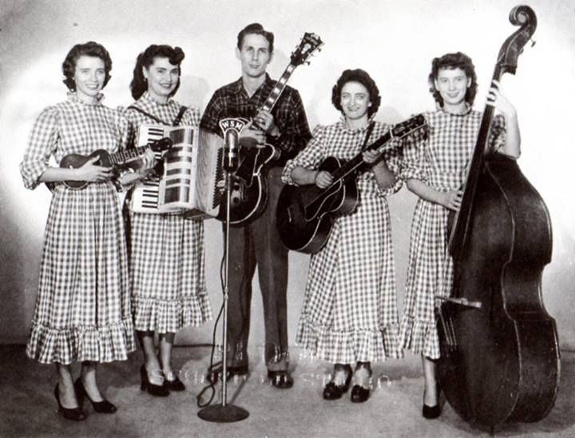

I am here to show you the instruments on a very basic level. I will walk you through each one, and how it is tuned. We will also go over some famous musicians who played each one. There is a lot to learn when it comes to Bluegrass Music!
Bluegrass music is more than barefoot country folk dancing to the banjo. This music is deep rooted in tradition and many may know The Carter Family as being one of the prominent in the genre.
June Carter went on to become famous in her own right, as well as being known for performing with Johnny Cash.